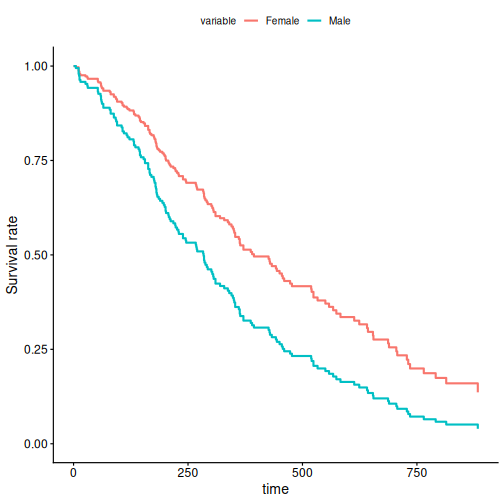
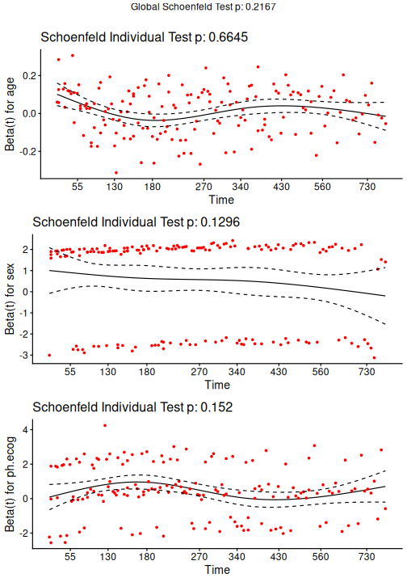
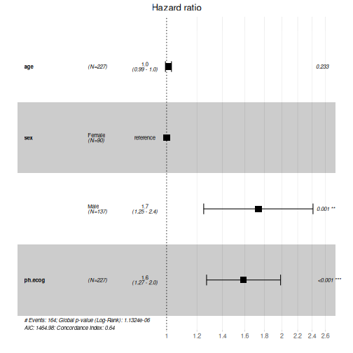

Cox Proportional Hazards
The Cox proportional hazards model[1] [2] is a semi-parametric regression model for survival (time-to-event) data. It relates the hazard of an event at time $t$ to a set of covariates through a hazard ratio, without requiring the baseline hazard to follow a specific parametric form, and its coefficients are estimated by maximizing a partial likelihood.
Let’s make an example with lung cancer dataset from survival package. Check ?survival::lung if you want more explanations about this dataset. Before load survivalGPU, use your virtual python environment (see vignette("installation")).
library(reticulate)
use_virtualenv(virtualenv = "survivalGPU")
Error in `use_virtualenv()`:
! Directory ~/.virtualenvs/survivalGPU is not a Python virtualenv
library(survivalGPU)
library(survival)
# ?survival::lung
data <- lung
data$status <- lung$status - 1 # event variable now coded in 0 - 1 (instead of 1 - 2)
data$sex <- ifelse(lung$sex == 1, "Male", "Female")
data <- data[stats::complete.cases(data[c("time", "status", "age", "sex", "ph.ecog")]), ]
data$id <- seq_len(nrow(data)) # one row per patient here, so a row index works as patient_id
head(data)
inst time status age sex ph.ecog ph.karno pat.karno meal.cal wt.loss id
1 3 306 1 74 Male 1 90 100 1175 NA 1
2 3 455 1 68 Male 0 90 90 1225 15 2
3 3 1010 0 56 Male 0 90 90 NA 15 3
4 5 210 1 57 Male 1 90 60 1150 11 4
5 1 883 1 60 Male 0 100 90 NA 0 5
6 12 1022 0 74 Male 1 50 80 513 0 6
You can realize the Cox model with the coxphGPU() function, which is written in the same way as the survival::coxph() function from survival package[3], with a Surv object in the formula. To add bootstrap confidence intervals afterwards, fit the model with x = TRUE and patient_id: bootstrap() reuses the design matrix and the patient ids stored in the fitted model. patient_id identifies each patient (subject) in data, so that bootstrap resampling is performed at the patient level rather than at the row level (relevant when a patient has several rows, e.g. with time-varying covariates). bootstrap() cannot run without it.
coxphGPU_fit <- coxphGPU(Surv(time, status) ~ age + sex + ph.ecog,
data = data,
ties = "breslow",
x = TRUE,
patient_id = "id")
bootstrap() refits the model on R patient-level resamples of the data stored in the fit, so it always uses exactly the data the model was fitted on.
The bootstrap resamples are drawn by PyTorch, not by R, so set.seed() has no effect on them. To get reproducible results, set PyTorch’s seed:
invisible(reticulate::import("torch")$manual_seed(42L))
coxphGPU_bootstrap <- bootstrap(coxphGPU_fit, R = 50)
# 50 bootstrap replicates for this example, but normally it's more.
You obtain with summary all results for the initial model, and a bootstrap confidence interval for the estimated coefficients.
summary(coxphGPU_bootstrap)
Call:
coxphGPU.default(formula = Surv(time, status) ~ age + sex + ph.ecog,
data = data, ties = "breslow", x = TRUE, patient_id = "id")
n= 227, number of events= 164
coef exp(coef) se(coef) z Pr(>|z|)
age 0.011041 1.011102 0.009267 1.191 0.233
sexMale 0.551890 1.736531 0.167742 3.290 0.001 **
ph.ecog 0.462947 1.588749 0.113574 4.076 4.58e-05 ***
---
Signif. codes: 0 '***' 0.001 '**' 0.01 '*' 0.05 '.' 0.1 ' ' 1
exp(coef) exp(-coef) lower .95 upper .95
age 1.011 0.9890 0.9929 1.030
sexMale 1.737 0.5759 1.2500 2.412
ph.ecog 1.589 0.6294 1.2717 1.985
Concordance= 0.637 (se = 0.025 )
Likelihood ratio test= 30.41 on 3 df, p=1e-06
Wald test = 29.84 on 3 df, p=1e-06
Score (logrank) test = 30.41 on 3 df, p=1e-06
----------------
Confidence interval with 50 bootstraps for exp(coef), conf.level = 0.95 :
2.5% 97.5%
age 0.986309 1.03211
sexMale 1.316420 2.44382
ph.ecog 1.302890 2.02079
Survival Curves
You can plot adjusted survival curves with survminer::ggadjustedcurves().
survminer::ggadjustedcurves(coxphGPU_bootstrap,
variable = "sex",
data = data)

This plot shows you survival curves for each sex group, adjusted on the effects of age and ECOG performance score. The result of is plot is that the female survival rate is higher than the male survival rate in time.
If you have no model, it’s possible to estimate survival curves with Kaplan-Meier estimation by survival::survfit(), and you can use survminer::ggsurvplot() to plot a Kaplan-Meier survival curve.
Test the Proportional Hazards Assumption
You can test the proportional hazards assumption for a Cox regression with survival::cox.zph() :
cox.zph(coxphGPU_bootstrap)
chisq df p
age 0.188 1 0.66
sex 2.297 1 0.13
ph.ecog 2.052 1 0.15
GLOBAL 4.451 3 0.22
Rejection of the null hypothesis (correlation between the Schoenfeld residuals and ranked failure time is zero) leads to a conclusion that the PH assumption is violated.
And plot scaled Schoenfeld residuals against the time for each covariates with survminer::ggcoxzph() function from survminer package.
survminer::ggcoxzph(cox.zph(coxphGPU_bootstrap))

If you see a violation of the PH assumption, you can test :
interaction $covariate*time$ term (not currently implemented in
survivalGPU)stratification
Forestplot
Also with the survminer package, you can use survminer::ggforest() function to plot forestplot for Cox PH model. The confidence interval plotted is the confidence interval by the normal distribution (not bootstrap)
survminer::ggforest(model = coxphGPU_bootstrap,
data = data)
